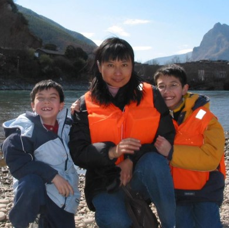
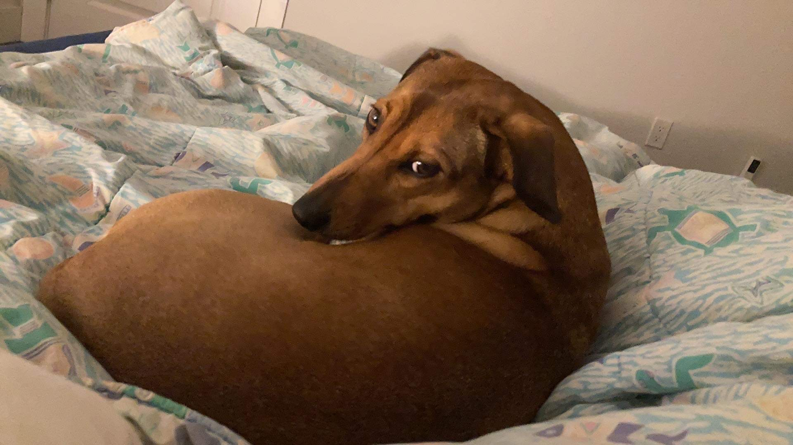

Short Biography
I spent a lot of my childhood shuttling back and forth between the United States and China, splitting my time between small suburban cities around Milwaukee, Wisconsin and the mega-cities of Beijing and Shanghai. After settling down in Brookfield, Wisconsin in my teenage years, I fell in love with in astronomy and physics around the age of 17 after reading a copy of From Eternity to Here: The Quest for the Ultimate Theory of Time by Sean Carroll. This led me to move again in 2011 to Boston, Massachusetts, to pursue my studies at Harvard University, where I completed my Bachelor's Degree with Honors jointly in Astrophysics and Physics in 2015.

Photo of me (right), my mother (center), and my younger brother (left) courtesy of Ron Speagle.
During my time at Harvard, I participated in multiple research projects across a wide range of topics in astronomy. What struck me across these projects was the extent to which so much of science depended on robust statistical analysis and computational methods, both in terms of generating underlying the data products as well as characterizing the significance of any particular findings. This led me to shift my research focus to the intersection of astrophysics, statistics, and computer science, namely astrostatistics and data science. As part of this shift, I moved again in 2015 to Kashiwa, Japan to work with Alexie Leauthaud and Kevin Bundy at the Kavli Institute for the Physics and Mathematics of the Universe (Kavli IPMU). This provided me with an invaluable opportunity to start my journey from astronomy and physics into statistics and comptuer science while I worked on improving photometric redshifts for the Hyper Suprime-Cam Subaru Strategic Program (HSC SSP) Survey.
In 2016 I returned to Boston to pursue my graduate studies in the Department of Astronomy at Harvard. I received by my Master's and Doctoral Degrees in 2020 under the joint supervision of Doug Finkbeiner, Charlie Conroy, Alyssa Goodman, and Daniel Eisenstein. My final thesis, "Mapping the Milky Way in the Age of Gaia", was only possible thanks to the broad range of expertise provided by my advisers and collaborators and the many exciting opportunities available through interdisciplinary research areas such as astrostatistics.
Following my second stint at Harvard, I moved (again!) to Toronto, Canada in 2020 to work under the supervision of Gwen Eadie (the first astrostatistics professor jointly appointed in both a statistics department and physics/astronomy department in Canada!) as a Banting Fellow and Dunlap Fellow at the University of Toronto. In 2022, I was extremely fortunate to be able to join her (and also not have to move again!) as the second Assistant Professor in Astrostatistics jointly appointed between the Department of Statistical Sciences and the David A. Dunlap Department of Astronomy & Astrophysics at the University of Toronto. And that's where things are today!
Outside of work, I mostly enjoy hanging out at home or going on walks with my wife and our two dogs (pictured below). I also watch way too much anime and play way too many video games, and have a supremely unhealthy love of junk food and soda.
Photo of Kumo courtesy of Laura Mackereth.

Photo of Aki courtesy of me!
Teaching
I have a strong interest in education and pedagogy, with a focus on practical skills such as programming, applied statistics, and data science that are invaluable but not often taught as part of a typical science curriculum. As part of my teaching, I try to develop online, interactive, and publicly available resources that facilitate "flipped classroom" environments focused on encouraging student engagement. A few examples can be found here, here, and here. I also work on publishing pedagogical texts like this that can serve as useful resources for students and instructors alike. See my Teaching Statement for additional details.
I also am a firm believer in peer-to-peer knowledge exchange as an integral part of learning about science and serve as an active participate in many journal clubs and discussion groups. In particular, I founded and organized the Machine Learning Journal Club at the Center for Astrophysics | Harvard & Smithsonian from 2017-2020, and am currently serving as the co-founder/organizer for the Statistics & MachIne LEarning Journal Club (SMILE) in Astronomy & Astrophysics at the University of Toronto.
Equity, Diversity, and Inclusion
For centuries, explicit and implicit discrimination have barred individuals from many backgrounds from participating fully and freely in science (to put it lightly). As scientists and people, I feel we have a duty to address these injustices to both better our profession as well as society at large. I endeavor to create an environment in which all members feel that their diverse backgrounds are an integral part of being a scientist rather than something that excludes them from being a valued member of the scientific community. As such, improving equity, diversity, and inclusion (EDI) in the sciences is an important component of all my work. My past, present, and future efforts aim to improve on these issues through a multi-faceted set of initiatives including making curricula more inclusive, creating dedicated skills training programs, establishing avenues for institutional support, assisting in building up communities, expanding outreach efforts, increasing data collection, and improving representation. See my EDI Statement for additional details.
Mentorship
I consider mentorship and collaboration to be at the heart of much my research and love working with students, postdocs, and faculty across disciplines. A somewhat complete list of mentees can be found here. If you're interested in working with me on a short-term or long-term project, please don't hesitate to reach out. My contact information can be found on the Home page.
Publications
A mostly complete list of my publications can be found on ADS and arxiv. I also maintain a list here.
Open Science
I am a big proponent of open, accessible, and reproducible science. When conducting research, my collaborators and I make an active effort to share all of the results, data products, and code along with interactive visualizations from our projects in order to enable readers to fully explore/utilize our findings for themselves. I also make an effort to ensure my code remains public throughout its development and is well-documented when officially released to the wider community.